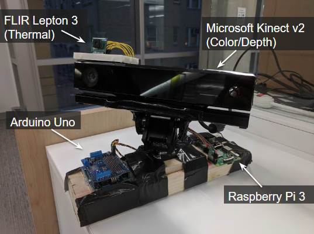

Team Coen-Sheridan: Distributed Climate Control


Welcome to the Distributed Climate Control (DCC) project. The purpose of this project is to provide an affordable solution to reduce energy usage from HVAC systems, which currently accounts for half of commercial and home energy costs in the US. Additionally, we want to contribute to global efforts towards creating affordable, sustainable energy technologies. Our system aims to provide accurate person detection by utilizing both color and thermal data. Using this information, we can split up, or distribute, heating and cooling such that it is provided only where needed. This project is part of continued research at George Washington University under Professor Simha and PhD candidate Andrei Claudiu Cosma, and is inspired by the ARPA-E’s research and funding of advanced energy systems. Please visit our Github page and take a look at our overview video below for further information and documentation.
Documentation:
Github Page
Poster
Project Summary
Revision of Project Summary and Elevator Pitch Transcript
Revision of Elevator Pitch and Commercial/Social Benefit
Interface Specifications
SIBR Application
Final Design Document
Conor and Dan were once 2 incredible devlopers who worked in tandem to set the foundation for the Distributed Climate Control Project. If you're reading this, they are no longer with us. They would want their research carried on.